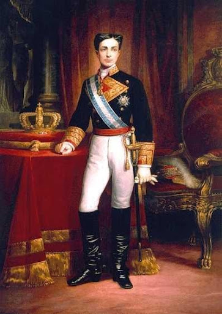
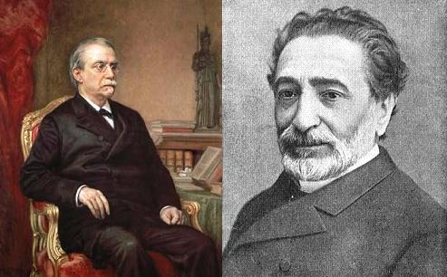
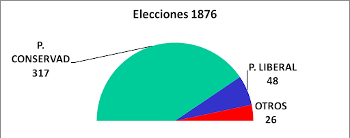
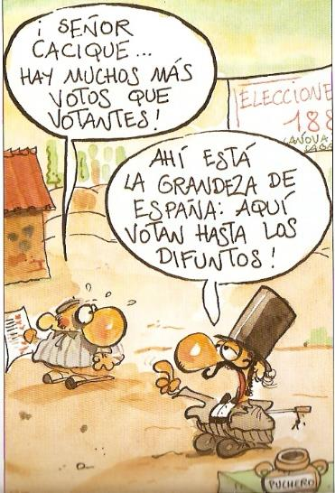
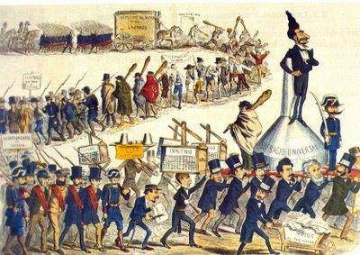
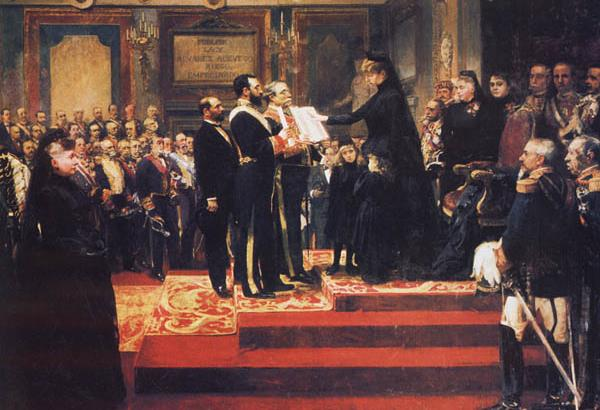
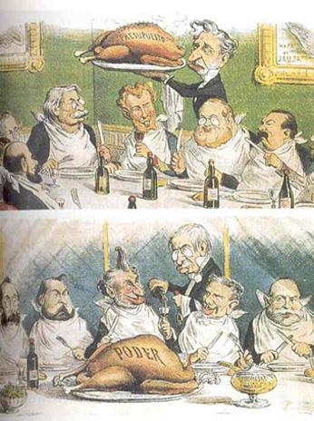

Tema 1: El Régimen de la Restauración Borbónica y su Evolución (1875 - 1931)
La estabilidad institucional cimentada en la Constitución de 1876, el turnismo pacífico y el caciquismo electoral, integrando el pleito y caciquismo en Canarias y la evolución hasta la crisis de la monarquía.
 Eje cronológico general de las fases políticas de la Restauración (1875 - 1931)
Eje cronológico general de las fases políticas de la Restauración (1875 - 1931)
1. El Regreso de los Borbones al Trono
El término Restauración se aplica en España a la vuelta de los Borbones al trono. Tras la accidentada andadura del Sexenio Democrático, el pronunciamiento militar del general *Arsenio Martínez Campos en Sagunto el 29 de diciembre de 1874 proclamó a *Alfonso XII como rey de España.

Retrato oficial de S.M. Don Alfonso XII de BorbónLa vuelta de la monarquía fue sumamente rápida y contó con un enorme deseo de pacificación nacional debido a la inestabilidad de la Primera República. Días antes, el 1 de diciembre de 1874, el joven monarca había firmado el Manifiesto de Sandhurst, un documento redactado por Antonio Cánovas del Castillo que presentaba la monarquía constitucional, conservadora y católica como la única salida viable.
2. La Constitución de 1876 y las Bases del Sistema
El verdadero cerebro del nuevo sistema político fue Antonio Cánovas del Castillo. El político malagueño pretendía asentar las bases del bipartidismo y de un orden constitucional estable que impidiera el carácter excluyente de los moderados del reinado anterior y subordinase el ejército al poder civil.

Izquierda, Canovas del Castillo lider del Partido Conservador .Derecha:Práxedes Mateo Sagasta, líder del Partido LiberalEl pilar jurídico del régimen fue la Constitución de 1876, la de mayor longevidad en la historia de España. Sus principales rasgos fueron:
- Soberanía compartida: Rechazaba la soberanía nacional al establecer que la potestad legislativa residía conjuntamente en las Cortes con el Rey.
- Amplias prerrogativas reales: El monarca ostentaba de forma preeminente el poder ejecutivo, el derecho de veto absoluto sobre las leyes aprobadas por las Cortes, el mando civil y militar del ejército y el poder de nombrar y destituir ministros de manera unilateral, así como convocar, suspender o disolver las cámaras sin consultar al parlamento. .
- Cortes bicamerales: Formadas por el Congreso de los Diputados (elegido por sufragio) y el Senado (donde dos tercios eran senadores vitalicios o por derecho propio).
- Indefinición del sufragio: La carta constitucional no definía el tipo de sufragio. Así, bajo el primer gobierno conservador se aprobó la Ley Electoral de 1878 que estableció el sufragio censitario (limitado al 5% de la población de mayores contribuyentes), hasta que en 1890 los liberales impusieron el sufragio universal masculino para todos los varones mayores de 25 años..
- Confesionalidad del Estado: El célebre Artículo 11 declaró a la religión católica como la única oficial y verdadera del Estado, consagrando la subvención financiera de la Iglesia a través de los presupuestos estatales de Culto y Clero, pero tolerando la libertad de culto y creencias individuales siempre y cuando no se realizase ninguna manifestación pública o ceremonia de carácter no católico en las calles.
- Subordinación Militar al Poder Civil: Se puso fin al constante golpismo militar del reinado de Isabel II mediante una Real Orden de 1875 que prohibió de forma taxativa la injerencia de los mandos militares en el juego de partidos políticos, relegando al ejército exclusivamente a la defensa nacional a cambio de un generoso y amplio presupuesto gubernamental.

Composición del Congreso de los Diputados tras las elecciones constituyentes de 1876Las Medidas Políticas del Gobierno Conservador (1875 - 1881)
Durante la primera etapa de la Restauración, conocida como la "dictadura de Cánovas", el gobierno conservador actuó de manera autoritaria con el objetivo de consolidar la defensa del orden social y la propiedad privada. Entre sus principales disposiciones legislativas destacan:
- Establecimiento de la censura previa (1875): Mediante un estricto control gubernamental sobre el orden público, se limitaron drásticamente las publicaciones de prensa y académicas.
- La restrictiva Ley de Imprenta de 1879: Clasificaba como delito grave cualquier manifestación o crítica dirigida contra la monarquía, el dogma católico o el propio sistema de la Restauración, lo que forzó el cierre de cabeceras de oposición.
- El Conflicto Universitario y la ILE: La aplicación de la censura en las aulas provocó la dimisión voluntaria y el cese forzoso de eminentes catedráticos universitarios como Emilio Castelar, Gumersindo de Azcárate o Nicolás Salmerón. Como respuesta directa de resistencia pedagógica, fundaron la laica y privada Institución Libre de Enseñanza (ILE) en 1876, bajo la dirección de Francisco Giner de los Ríos.
3. El Funcionamiento Electoral: Turnismo y Caciquismo
Para asegurar la estabilidad institucional, se organizó un sistema basado en la alternancia regular o turno pacífico de dos grandes fuerzas dinásticas, llamadas partidos de turno, inspirados en el parlamentarismo británico:
- El Partido Conservador (o Liberal-Conservador): Liderado por Antonio Cánovas del Castillo, representaba la derecha tradicional y el orden católico, con el respaldo de la alta burguesía, la aristocracia y la jerarquía eclesiástica.
- El Partido Liberal (o Liberal-Fusionista): Dirigido por Práxedes Mateo Sagasta, aglutinaba a antiguos progresistas, unionistas de izquierda y republicanos moderados, defensores de reformas sociales más laicas.
Este sistema no dependía de la voluntad real de los electores, sino que las elecciones se manipulaban sistemáticamente desde el Ministerio de la Gobernación mediante el encasillado (la asignación previa de escaños) y la red de gobernadores civiles, gobernando el partido que convocaba los comicios.
Para conseguir esa mayoría falsificada, el gobierno movilizaba a los gobernadores civiles y, de forma prioritaria, a la red local de caciques (terratenientes o comerciantes ricos que dominaban las comarcas rurales). El cacique intercambiaba favores por votos, valiéndose de la miseria de los campesinos: si votaban al candidato gubernamental, les daba trabajo en el campo, agilizaba papeles o los libraba del sorteo de las quintas militares; de lo contrario, los condenaba al paro. El fraude se completaba el día de la votación mediante el pucherazo (la falsificación sistemática de las actas de escrutinio, la compra de sufragios o la inclusión de fallecidos en las urnas).

Caricatura que denuncia la resurrección de fallecidos en el censo electoral
Ilustración satírica sobre la coacción electoral clerical en los pueblos🏛️ El Caciquismo Canario y las redes del Pleito Insular
En el archipiélago canario, el sistema del turnismo y el fraude electoral canovista se adaptaron con una fisionomía singular debido al histórico pleito insular derivado de la capitalidad única decretada en 1833 en favor de Santa Cruz de Tenerife.
Las redes del poder oligárquico de las islas mayores se articulaban de forma clientelar a través de las facciones insulares de los partidos del turno:
- La oligarquía de Tenerife: En la isla del Teide, la red hegemónica estuvo estructurada fundamentalmente en torno al Partido Liberal, liderado en las últimas décadas del siglo XIX por el influyente diputado por La Orotava, Feliciano Pérez Zamora, y continuada por figuras como Gumersindo de La Rosa. Pérez Zamora y sus sucesores dominaron el cabildo y las instituciones provinciales con el respaldo de la burguesía agraria, asegurando la capitalidad única y primando el flujo de presupuestos estatales hacia las obras públicas tinerfeñas.
- La burguesía de Gran Canaria: Aunque en la isla coexistió una fuerte presencia del Partido Conservador, la gran figura del periodo fue el diplomático y ministro liberal Fernando León y Castillo quien, junto a su hermano Juan, articuló el "leoncismo". Al frente de la burguesía mercantil grancanaria y aliado con los intereses de las navieras británicas, impulsó infraestructuras clave como el Puerto de La Luz (1883) y encabezó las demandas de descentralización y división provincial para romper el monopolio administrativo de Santa Cruz.
Los caciques ejercían una implacable dominación sobre una gran masa de campesinos sumidos en la pobreza, que trabajaban bajo el régimen de medianería o como jornaleros desposeídos. En una sociedad con altísimas tasas de analfabetismo, el cacique garantizaba el control social mediante el dominio del acceso a la tierra y al agua de riego. La oligarquía y el clero contenían el descontento popular para evitar estallidos sociales, recurriendo a las fuerzas de seguridad para reprimir duramente las huelgas y los recurrentes motines del hambre que estallaban en las ciudades y campos canarios durante las épocas de sequía o crisis agraria.
4. La Regencia de María Cristina y el Pacto del Pardo (1885 - 1902)
La prematura muerte de Alfonso XII por tuberculosis en noviembre de 1885 puso en serio peligro la estabilidad institucional del Estado al dejar como heredero a un niño póstumo. Para blindar el régimen de presiones carlistas y republicanas, los líderes de ambos partidos firmaron el Pacto del Pardo (1885).

La reina María Cristina de Habsburgo jurando la Regencia ante las Cortes (Joaquín Sorolla)A través de este acuerdo político, se consolidó la regencia de María Cristina de Habsburgo y el llamado "gobierno largo" de los liberales de Sagasta (1885-1890). Durante este periodo de hegemonía liberal se sacaron adelante de forma pactada trascendentales reformas políticas y legislativas que ensancharon la base social del régimen:
- La Ley de Asociaciones (1887): Eliminó la distinción administrativa entre partidos legales e ilegales, posibilitando la plena legalización de sindicatos obreros y de partidos de oposición (como el PSOE fundado por Pablo Iglesias en 1879, que pudo así salir de la clandestinidad).
- La libertad de cátedra, prensa y expresión (1887): Supuso la abolición práctica de la censura previa conservadora, permitiendo una mayor tolerancia y debate de ideas en universidades y cabeceras de prensa.
- La abolición definitiva de la esclavitud (1888): Completó de forma legal los compromisos que se habían retrasado sistemáticamente desde la Paz de Zanjón (1878).
- La promulgación del nuevo Código Civil (1889): Unificó y sistematizó de manera uniforme el marco jurídico de los ciudadanos en todo el territorio nacional.
- La implantación del Sufragio Universal Masculino (1890): Marcó el fin de la restrictiva era del sufragio censitario. Al conceder el derecho a voto a todos los varones mayores de 25 años, el censo electoral de votantes potenciales se amplió exponencialmente de 800.000 a más de 5.000.000 de ciudadanos.
A pesar del avance democrático que supuso el sufragio universal, la pervivencia del fraude electoral y la red de influencias caciquiles en la España rural impidieron una democratización real de las Cortes, aunque permitió a las facciones republicanas obtener representación en las principales capitales urbanas donde el control de los caciques era ineficaz.

Caricatura satírica ridiculizando el pacto entre conservadores y liberales para repartirse el pastel estatal